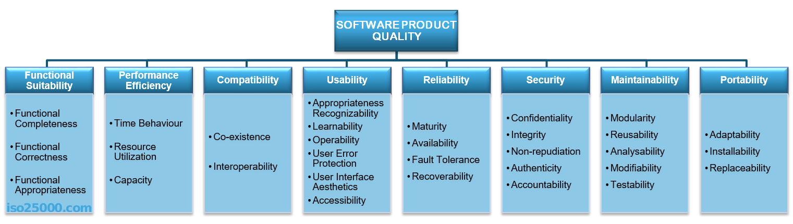

class: center, middle #Software Qualität Technische Schulden und wie man sie bewältigt </br></br></br></br></br></br></br> </br></br></br></br></br></br></br> André Matutat --- # Fahrplan 1. Software Qualität 2. Technische Schulden 3. Folgen von Schulden 4. Ursachen von Schulden 5. Unterschiedliche Arten von Schulden 6. CMoTD 7. Managment von Schulden 8. Wie sieht es da draußen aus? --- #Motivation - Good Practice ist theoreitsch bekannt - Dokumentieren, Kommentieren, Testen, Refactoren etc. - **ABER** - "Wir haben keine Zeit" - "Mach ich später" - "Das ist jetzt nicht so wichtig" - "Ist das wirklich nötig?"" - Schaden durch qualitativ schlechte Software ca. **$59.5 Milliarden** jährlich - Schaden lässt sich durch bewusstes handeln und managen deutlich verringern --- # Was ist gute Software?  --- # Technische Schulden >"In software‐intensive systems, technical debt is a design or implementation construct that is expedient in the short term but sets up a technical context that can make a future change more costly or impossible. Technical debt is a contingent liability whose impact is limited to internal system qualities, primarily maintainability and evolvability" **Oder anders:** - sind die Konsequenzen aus (technisch) schlechter Umsetzung - sind der entstandene Mehraufwand --- ## Eigenschaften von Schulden - unsichtbar - haben negativen Einfluss auf das Geschäft - MÜSSEN zurückgezahlt werden - meistens in man-hour gemessen --- class: center, middle <img src="./img/schuldenverlauf.png" width="700" height="500" /> --- # Arten von Schulden - Implementationschulden - Architekturschulden - Testschulden - Dokumentationsschulden --- # Typische Schulden - Dokumentation veraltet - Fehelende Infrastruktur (Versionierung, Datensicherung etc) - **Schlechte Testabdeckung** - Keine Coding Standards - Code Smells - Fehlerhafte Definition oder Umsetzung von Architekturen --- ### Folgen von technischen Schulden - Software wird unübersichtlich und ineffizient - Modifizierungen sind deutlich aufwendiger als nötig - Geringe Testabdeckung sorgt bei Änderungen für mehr Fehler - Entwickler bekommen "Angst" den Quellcode anzufassen - Zinses Zins Effekt bis die Software unwartbar und unwirtschaftlich wird - Fördern schlechte Einstellung --- # Was kosten Schulden - Schwer abzuschätzen - Kosten um Schulden zu bezahlen lassen sich grob schätzen - ähnlich wie die Kosten eines neuen Features - Kosten schulden zu behalten lassen sich schwer abzuschätzen - SCRUM Teams können schätzen wie viel kleiner ihr Backlog wird wenn die Schulden bezahlt werden - Es gibt einige (teils sehr komplexe) Ansätze um technische Schulden ökonomisch zu bewerten --- # Wie enstehen technische Schulden - **nicht immer liegt es am Entwickler** --- <img src="./img/kreislauf.png" width="700" height="500" /> --- ### Weite gründe - Technologische Limitationen - Legacy Code - Veränderungen in Technologien - Projektreife - Schlechte Codepflege - **unklare oder sich ständig ändernde Anforderungen** - kein Wissen über best practices - Aufschieben von Aufgaben - Machen von schlechten Annahmen - Unerfahrenheit - **Unprofessionalität** - **Schlechte Teamleitung** - **Kein Durchsetzungsvermögen gegenüber Kunden/Manager** - Wisse wie Code "sicher" geändert werden kann - Schlechte Kommunikation zwischen Entwickler und Management - **Ändern der Prioritäten** - Fehlende Vision/Plan/Strategie - Unklare Ziele und Prioritäten - **Versuch jeden Kunden zufrieden zu stellen** - Unklare Entscheidungen --- # Bewusste Schulden --- class: center, middle <img src="./img/tf2.png" width="700" height="300" /> --- # Gute Schulden - gute Schulden sind **IMMER** bewusste Schulden - Prototypen - Umgang mit neuen Technolgien lernen - komplexität vom "großen" Projekt abschätzen - wird am ende verworfen - kann ruhig "dirty" umgesetzt sein - Fehler stehen lassen - wie gefährlich ist der Fehler? - kann er einfach behoben werden? - sind neue Schulden erforderlich? --- # Taxonomie <img src="./img/tax.png" width="700" height="500" /> --- # CMoTD <img src="./img/cm.png" width="700" height="500" /> --- # Was jetzt? <img src="./img/schuldenberg.jpg" width="700" height="500" /> --- # Schulden Managen 1. Nicht-Informatiker überzeugen 2. Vermeiden 3. Erkennen 4. Bewerten 5. Entscheiden 6. Bezahlen --- class: center, middle # Chef das ist wichtig! --- class: middle *Manager*: I need feature X. How much time do you think it will take you? *Developer*: 1 week. *Manager*: Hmm, it needs to go online in two days though, as big event X is in two days . *Developer*: OK, I’ll see what I can do. *Manager*: OK *Developer*: OK --- class: middle *Manager*: I need feature X. How much time do you think it will take you? *Developer*: 1 week (*1 day of thinking, 2 days coding and testing, 1 refactoring, 1 days extra testing*) *Manager*: Hmm, it needs to go online in two days though, as big event X is in two days *Developer*: OK, I’ll see what I can do (*I’ll cut down on the thinking and testing*) *Manager*: OK (*I’m a great manager, I just managed to get something done in 2 days which normally takes a week*) *Developer*: OK (*ugh, always the same, we just can’t write decent code here*) --- ## Problem - Der Manager will das Feature möglichst schnell, da es so am meisten Geld einbringt - Der Manager denkt jetzt, es ist möglich das Feature in 2 Tagen zu entwickeln. In 2 Tagen sieht er, dass es geht. - Was heute klappt, klappt auch morgen. --- class: middle *Manager*: I need feature X. How much time do you think it will take you? *Developer*: 1 week *Manager*: Hmm, it needs to go online in two days though, as big event X is in two days *Developer*: It’s impossible to do this feature well in 2 days, it needs a week to be done properly. *Manager*: OK, but we don’t have a week. If it takes a week, there’s no point as we won’t earn as much money from it. *Developer*: What I can do is take a shortcut and do it quickly. That would require me to rearrange some things and I need to go back later to fix it. *Manager*: OK, that sounds reasonable (*great, I’m going to get it done in time*) *Developer*: OK (*great, I will make sure the feature gets implemented soon and then I’ll need to go back to make sure nothing gets left behind that can cause trouble in the future*) --- ## Argumente - Versuchen auf Augenhöhe zu kommunizieren - Gegenüber "nicht Informatikern" nicht technisch werden - Auf Kosten beziehen - evtl. mit Beispielrechnung - statt von Schulden von Verschleiß reden --- # Vorsorge - Dokumente pflegen - Code Richtlinien aufstellen und einhalten (stichwort Clean Code) - Paar Programming - Code Reviews - Quellcode regelmäßig refactorn - Tests schreiben und bei bedarf erweitern - TDD - Bewusst aufgenommene Schulden verstehen, diskutieren und dokumentieren --- # How to Review - Automatisieren was geht - Jeder Entwickler reviewet sein Code erstmal selbst - Review sollte von erfahrenen Entwickler gemacht werden - Zeit investieren - Regelmäßige Reviews von Teilfeature - 200-400 Zeilen Code in 60-90min (danach Pause machen) - Review Kommentare sind konstruktiv und nicht persönlich verletztend - Checklisten erstellen - Review Bereich festlegen (z.B Fokus auf Performance) --- class: center, middle --- # Schulden erkennen - schwierig - vorallem bei großen und komplexen Projekten - externe Experten können helfen - Symptome - eine Klasse/Modul enthält den großteil des Quellcodes - niedrige Kohäsion und hohe Kopplung - große Zyklen - Architekturmuster werden falsch verwendent (Architekturanalyse) --- class: center, middle # SonarQube Live Demo --- ### Weitere Tools - JDepend - Java - NDepend - Net - CDepend - C/C++ </br> </br></br></br></br> - Structure 101 - Java, C++ - Lattix - Java, Net, C/C++, DB-Systeme - Teamscale - C#, Java - Seerene - Java, C#, C/C++ --- class: center, middle > Kein System ist perfekt. Es gibt immer etwas zu optimieren. Das bedeutet, dass Teams praktisch unbegrenzt optimieren können. Wenn das Team durch eine Optimierung keine Verbesserung der Produktivität erwartet, die mehr bringt, als die Optimierung an Aufwand kostet, dann sollte die Optimierung unterbleiben. --- # IFA - **I**mpact - Einfluss auf Benutzererfahrung und Entwicklungsumgebung - **F**ixkosten - Wie hoch ist der Aufwand den Fehler zu beheben - **A**nsteckungsgefahr - Wie hoch ist die Gefahr das sich die Schuld verbreitet (z.B durch Copy Paste) --- # Bezahlen - Schulden Priorisieren - erst Schulden mit großen Einfluss abarbeiten - Schuld angemessen zurückzahlen - keine neuen Schulden machen --- # Schulden und Legacy Code - Ab jetzt neustarten - Schulden richtig Managen - ordentlich arbeiten - Legacy Code schritt für schritt isolieren - Änderungen am Legacy Code MÜSSEN den Code besser zurücklassen --- ### Technische Schulden in der Realität **An empirical assessment of technical debt practices in industry** - **75%** Managen ihre Schulden nicht - Startups nehmen viele Schulden als Investment auf - Itablierte Unternehmen Managen meist besser als Startups - Die höhe der Schulden werden meist in men-hour to fix angegeben --- # Tldr - Technische Schulden - entstehen bei "schlampiger" Umsetzung - lassen sich selten vermeiden - sind nicht nur auf Code beschränkt - können bewusst und unbewusst gemacht werden - vermehren sich - kosten (richtig viel) Geld - lassen sich durch gutes Managment reduzieren **Arbeitet ordentlich sonst fällt es euch auf die Füße.** --- class: center, middle # Fragen? # Anregungen? --- class: center, middle #**DANKE**